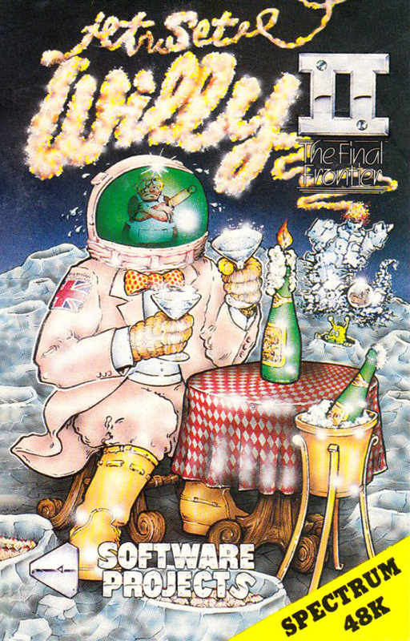
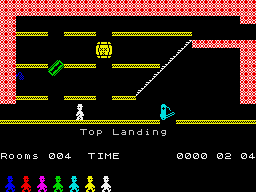

Jet Set Willy II


{kind=link}

| Publisher: | Software Projects |
| Price: | £6.95 |
| Year: | 1985 |
| Source: | CRASH, Issue 19 |
There really isn't a great deal that can be said about this game that hasn't been said about its predecessor Jet Set Willy. Jet Set Willy II is a pretty faithful sequel.

The story begins soon after poor old Willy has had a nasty fall down the stairs. He should be in bed recovering but due to the mess left by some rather strange builders his wife Maria is having a fit and insisting that Willy tidies the house. On his journey round the mansion Willy is shocked to discover that it has a lot more rooms than he is paying rates for The Builders are responsible, but why?
As before you must guide Willy around the house avoiding the myriad hazards — razor blades and flapping too seats to mention just two_ As you pass from room to room you will notice objects be they bottles, glasses or even taps. These objects must be collected by guiding Willy over to them and touching them. This may mean having to dodge 'things' scampering up and down in your path, in which case you will have to apply a little skillful jumping. Some very nasty traps have been set for you — the conveyor belt is a cinch compared to some. Repeat the gathering process for each room of the house and hope that you make it to the end, whatever that may be.
CRITICISM
'I think that Jet Set Willy II is a brilliant game, but it's a shame so many of the screens are the same as Jet Set Willy. The graphics are identical— they still have the same degree of smoothness and clarity, reluctantly have to conclude that I don't consider Jet Set Willy to bee sequel... it's more of a De—luxe version. That said, the game is still up to a pretty high standard, better in some respects.'
'No doubt there are many people that have eagerly awaited the arrival of JSW2. It has been a long wait and my good ness, it wasn't worth one tiny minute! Admittedly there are thousands of people who bought JSW and no doubt there will be thousands who will buy SW2, but what you get for your £6.95 is an extra forty rooms to explore and work your way through. Great, isn't it? The graphics are now somewhat dated and long past their prime. It's a shame that Software Projects didn't put their time and effort to better use and produce a totally new idea instead of extending an already dead and well-poked game. Definitely not my idea of a fun playing game, but I suppose it's quite a good buy if you haven't already got JSW1.'
'Here we go again on the final part (hopefully) of the Willy Trilogy. At the end of eighty-three we marvelled at the superb graphics and addictiveness of Manic Miner; in mid eighty-four we were astounded at the sheer size and playability of one of the first arcade adventures Jet Set Willy, which sparked off Poke Mania (or Candyitis as some people call it). Now a year on we can again be astounded by the playability and larger size of the same game that we were astounded by last year... I'm afraid to say that JSW 2 is not a great improvement on its parent. The main differences between JSW 2 and JSW are the extra screens and the speed — which is a touch faster, making the game slightly more payable. Another difference I have noticed is that it is easier to get into loops where you lose all your remaining lives. This is obviously very infuriating if you are well into the game. If you haven't seen JSW 1 yet (where have you been?!) would recommend this game. I wouldn't tell players of JSW I not to buy this game either as it is interesting to play the extra screens. Generally I found this game playable, but I can see my interest deteriorating after a few weeks.'
COMMENTS
| Control keys: | Q,E,T,U,O: left, W,R,Y,I,P: right, shift to space: jump |
| Joystick: | Kempston and Ram Turbo |
| Keyboard play: | Very good |
| Use of colour: | Very good |
| Graphics: | As good as ever |
| Sound: | Nice tune |
| Skill levels: | One |
| Lives: | Seven |
| Screens: | Over 100 |
| General rating: | Very good... but not much progress |
| Use of computer: | 70% |
| Graphics: | 50% |
| Playability: | 60% |
| Getting started: | 70% |
| Addictive qualities: | 45% |
| Value for money: | 72% |
| Overall: | 61% |